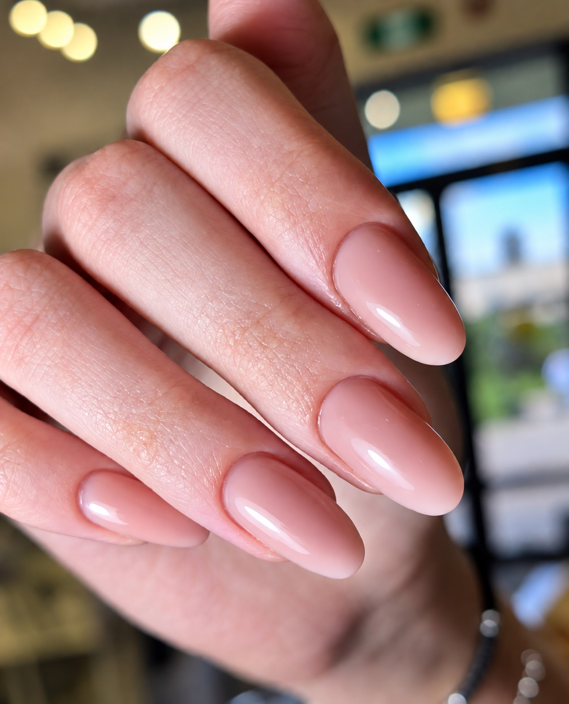

Главная / Отзывы
Отзывы гостей
Посещали салон, чтоб проколоть ушки дочке. Всё прошло очень хорошо. В салоне чисто и приятно. Большой выбор серёжек, консультация, нам всё понравилось. Быстро и почти не больно. Мама тоже не ушла без нового прокола, хотя приходила за консультацией)) . Мы довольны, большое спасибо. Рекомендую и желаю процветания.
Олеся волшебная фея🥰 сделала стрижку и укладку, очень ей благодарна. Однозначно рекомендую ☺️
Салон понравился. Уютно, чисто, стильный интерьер. Приветливая, милая администратор. Мастер-парикмахер Олеся выше всяких похвал! Идеальная короткая стрижка! Легко укладывается и отлично выглядит даже когда отрастает. Олеся слышит и учитывает все требования клиента. Спасибо ей огромное за труд, мастерство и золотые руки!
Отличное окрашивание,приятная обстановка. Большое спасибо мастеру -Олесе.
Очень эстетичный салон в Троицке, с удобным расположением. Девочки-администраторы очень приветливы ☺️ Прокалывала одно ушко на 2-е дырочки. Инна, очень приятная девушка и профессионал своего дела! Все сделала максимально быстро и совсем не больно 🫶 без шума и пыли, как говорится 😀 Не зря мне порекомендовали этот салон 😍 с удовольствием и смело буду рекомендовать и своим знакомым.
Любимый салон в городе. Все специалисты высшего уровня. Проходила процедуры у всех косметологов и всех мастеров. Тут можно пройти курс массажа, сделать уколы красоты, маникюр и конечно качественное окрашивание и стрижку.
Была первый раз. На стрижке у Олеси, потом у косметолога Ольги. Ооочень довольна, вышла счастливая и красивая))) Олеся очень приятная, культурная, профессионал 100%. Делали стрижку с рваной челкой, сначала описала пожелания, потом показала пару фото для примера и понимания «настроения». Сделала все даже лучше, чем я ожидала, а главное, не понятно было, кто из нас больше доволен остался)))) обязательно вернусь к ней. Косметолог Ольга - уровень не Троицк и далеко не вся Москва. Так работают Врачи в очень дорогих закрытых клиниках. Сначала все выслушала, сформулировала себе задачу, все проговорили, посчитали, согласовали (заняло около часа!) и только потом приступили к делу. Информации, очень полезной для себя, вынесла кучу!!! Реально не верится, что такой профессионализм был так близко все это время))) Это не просто вколоть и увеличить или подтянуть, но и про медицину и красивый=здоровый внешний вид. В общем, девчонки, руководители, персонал - все умнички!!! Конечно я буду постоянным клиентом теперь )
Замечательное место! Нашла этот салон более 4 лет назад. Все продумано от работы администратора до конечного результата. Работа мастера Олеси всегда вызывает восторг! Выслушает пожелания. Супер мастер: компетентная внимательная, очень ответственная, знает, как сделать так чтобы волосы после всех процедур остались здоровыми. Мастер творит во время работы, чувствует что лучше подойдет, прекрасно подбирает цвет. Администраторы всегда внимательные. Во время процедуры всегда предложат чай, кофе (кофе классный). После посещения салона настроение всегда на высоте! Удобное место расположения для автолюбителей есть парковки возле дома где находится салон или рядом, места всегда есть, если общественным транспортом рядом автобусная остановка. Минусов не нашла.
Сегодня была на коррекции и окрашивании бровей. Всё очень понравилось, было быстро и безболезненно! Мастер Инна смогла сохранить естественную форму и сделать естественное окрашивание, которое не утяжеляет лицо. Проконсультировала, обговаривая каждый этап, для достижения идеального для меня результата. Спасибо!
Мастера Яна и Олеся - просто шикарные профессионалы и люди! Благодаря им я стала чувствовать себя увереннее и привлекательнее. Яна всегда даст рекомендации по уходу за лицом и телом, которые работают, супер деликатно относится к работе, к клиенту. Стараюсь пробовать разные процедуры и всегда результат получается шикарный! У Олеси выполняю окрашивания и стрижки, с ней не боюсь меняться, качество волос всегда отличное! Во время процедур с девушками я отдыхаю, наполняюсь энергией, обстановка и атмосфера очень приятные, всегда рада возвращаться, встретят, как любимого гостя :) Я уверенно могу сказать, что нашла своих мастеров, которым могу доверять на все 1000%!
Шикарно! Посетила впервые и приду еще 100 раз и больше! Была у мастера по маникюру Елены! Замечательный мастер, аккуратная, вежливая, а самое главное, профессионал своего дела! Из моих «огрызков» слепила шедевр! Спасибо большое, что Вы есть и что у Вас работают такие замечательные люди.
Первый раз в жизни была у косметолога, мне сделали комбинированную чистку лица, нанесли уход, проконсультировали. После посещения я почувствовала себя очень расслабленной и свежей. Выражаю искреннюю благодарность за добросовестное выполнение работы, затраченное время, приложенные усилия. Инна - прекрасный специалист которому можно доверять! Внимательная, деликатная, отзывчивая. Не навязывает лишнего, только по делу. Рекомендую!
Была у замечательного врача Ольги Ивановны. Перед процедурой получила подробную консультацию. Саму процедуру Ольга Ивановна провела, учитывая мои индивидуальные анатомические особенности, очень профессионально, на мой взгляд, и аккуратно. После процедуры ощущения в точности, как описала доктор). В течение двух дней после процедуры уже получила комплименты). Кроме того, атмосфера в салоне очень приятная и уютная. Уже не первый раз обращаюсь сюда за услугами. Всем рекомендую.
Хочу выразить огромную благодарность студии за прокол ушек нашей трехлетней дочке! Мы очень сильно переживали, как всё пройдет в таком нежном возрасте, но наши страхи рассеялись с первых минут. Огромное спасибо мастеру Инне! Ее взаимодействие с ребенком - это просто высший пилотаж. Она сразу нашла подход к дочке, общалась очень мягко, дружелюбно и превратила весь процесс в увлекательную игру. В итоге все прошло абсолютно безболезненно, дочка даже испугаться не успела, не пролила ни одной слезинки! Мы вышли из студии счастливые, с красивыми первыми сережками и отличным настроением. Всем мамочкам рекомендую обращаться именно сюда к мастеру Инне!
В этот салон я пришла впервые, но уже с полной уверенностью могу сказать, что буду возвращаться сюда снова и снова! Здесь работают настоящие профессионалы своего дела, мастера с большой буквы. Они умеют найти подход к каждому клиенту, учли все мои пожелания и сделали всё просто идеально. Стрижка получилась именно такой, как я хотела, маникюр и педикюр выполнены безупречно. Я осталась довольна абсолютно всем! Обстановка в салоне очень уютная и приятная, чувствуешь себя как дома. Администратор приветливая и доброжелательная, всегда готова помочь и ответить на любые вопросы. Огромное спасибо всем мастерам за их труд и внимание к деталям!